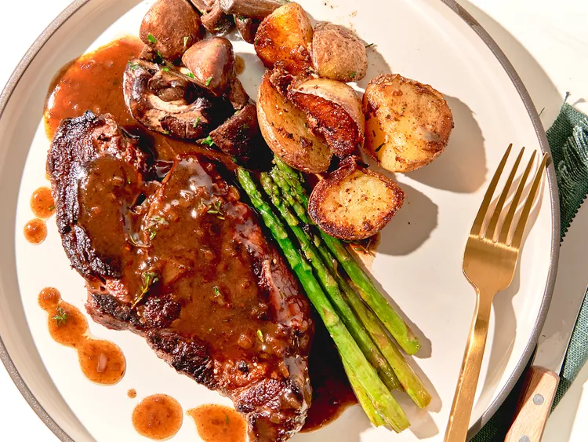

Seared Chuck Eye Steak

Flavorful Seared Chuck Eye Steak
Seared chuck eye steak is a flavorful and budget-friendly cut that, when cooked right, rivals more expensive steaks. Season the steak generously with salt, pepper, and your favorite herbs, then sear it in a hot cast-iron skillet with butter and garlic for a beautifully caramelized crust.
Cooking it to medium-rare ensures tender, juicy bites packed with beefy goodness.
To elevate the meal, pair the steak with roasted vegetables or mashed potatoes and drizzle it with a simple pan sauce made from the steak drippings, butter, and a splash of red wine or broth.
This quick and satisfying dish is perfect for a weeknight family dinner or a casual get-together.
Ingredients
- 4 (8 ounce) beef chuck steaks, well trimmed, at room temperature
- salt and freshly ground black pepper to taste
- 2 tablespoons olive oil, or as needed
- 3 tablespoons butter, divided, or more as needed
- 2 sprigs fresh thyme (optional)
- 2 cloves garlic, crushed
- 1 shallot, minced
- 1/2 cup beef broth
Steps
- Pat steaks dry with a paper towel. Season generously with salt and pepper.
- Heat oil in a skillet over high heat. Place steaks in the hot skillet and immediately turn down the heat to medium-high. Cook for 4 minutes. Turn steaks, add 1 tablespoon butter (or more as desired) and thyme sprigs to the pan, and cook for an additional 4 to 6 minutes, depending on your taste. Remove steaks from skillet and let rest, about 5 minutes.
- Meanwhile, make pan sauce: remove skillet from heat. Quickly saute the garlic and shallot for 1 to 2 minutes in the skillet using residual heat. Return the skillet to medium-low heat and add beef broth. Bring to a boil and reduce for 3 minutes.
- Remove pan from heat and whisk in remaining 2 tablespoons butter. Serve sauce over steaks.